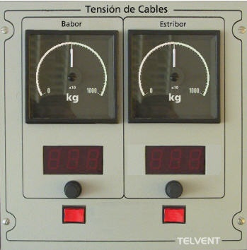

Tensión de Cables
Este panel dispone de dos módulos de control de tensiones uno para el cable de babor y otro para el de estribor.

Cada módulo (babor y estribor) contiene los siguientes elementos:
- Indicador analógico de Tensión del Cable: es un indicador analógico con iluminación regulable, y escala de 0 a 1000 (x10) kg.
- Indicador digital de Longitud del Cable: es un indicador digital de tres cifras en el que se muestra la longitud del cable en metros.
- Potenciómetro de Ajuste de Máxima Tensión del Cable: permite establecer el nivel de tensión que hará saltar la alarma de máxima tensión del cable.
- Indicador de Alarma de Máxima Tensión: es un indicador luminoso que se enciende cuando la tensión del cable supera la tensión establecida cómo máxima mediante el potenciómetro de ajuste de máxima tensión.
En las artes de pesca que sólo tienen un cable (cerco, palangre) sólo está activo el módulo de estribor.